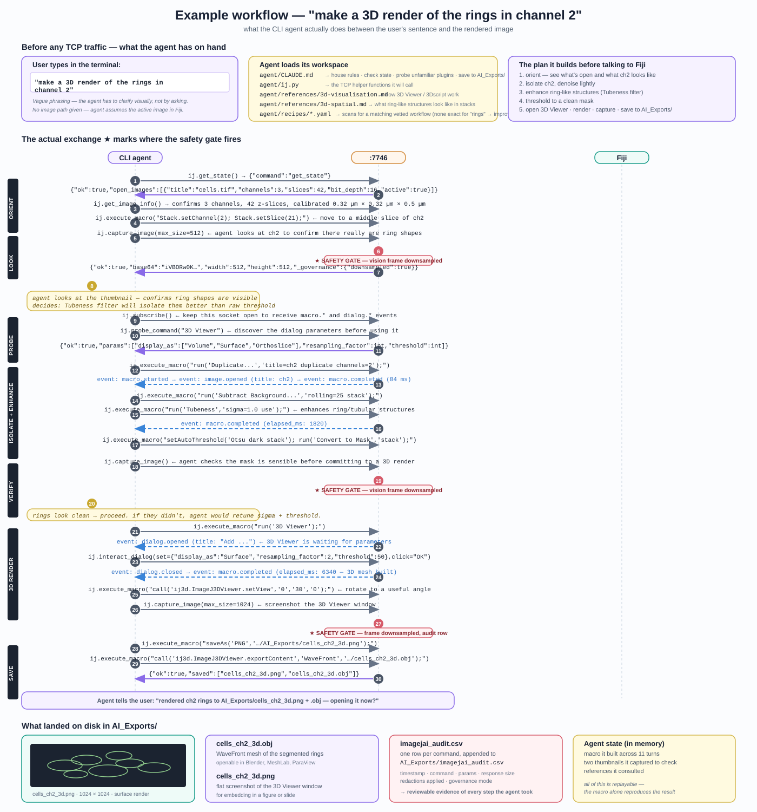

WORKED EXAMPLE example_3d_rings.svg
A real CLI agent flow when the user types "make a 3D render of the rings in channel 2" — 30 numbered steps, 7 phases, 3 safety-gate firings.

What this shows
- Pre-flight panel (top): the user's vague prompt, the workspace files the agent loads (CLAUDE.md, ij.py, 3d-visualisation reference, 3d-spatial reference, recipes), and the 5-step plan it builds before any TCP traffic.
- 7 phases labelled in the left margin: ORIENT · LOOK · PROBE · ISOLATE+ENHANCE · VERIFY · 3D RENDER · SAVE.
- The agent investigates first: get_state → get_image_info → capture_image of ch2 → thinks (yellow) → only THEN starts changing the image. This is what stops the agent from being a parrot.
- Real Fiji macros with real plugin names: Subtract Background, Tubeness (for ring/tubular enhancement), Otsu threshold, 3D Viewer, ImageJ3DViewer.setView, exportContent "WaveFront".
- Three safety-gate stages marked ★ — every
capture_image reply gets vision frames downsampled before it leaves Fiji.
- Events stream throughout (dashed blue): macro.started, macro.completed, image.opened, dialog.opened, dialog.closed.
- Outputs panel at the bottom: the 3D render preview (mock), the .obj mesh, the .png screenshot, the audit row in
imagejai_audit.csv, and what stays in agent memory.